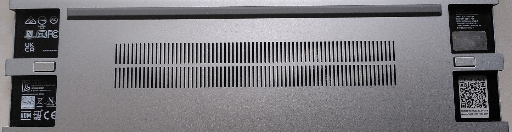

I finally received the Framework laptop, said by many to be one of the most repairable and modular laptops made so far.
Tons of professional reviewers and Youtubers have already given their opinions and made teardown videos. Instead of mimicking what has already been done, I decided to put myself in the shoes of an ordinary layman and share my thoughts from a personal usability perspective.
A major design flaw was found by some on this first-gen Framework product using the 11th-gen Intel CPUs, do read it before committing to purchase.
- Overview of the Framework laptop
- My purchase specification
- The hardware setup process
- OS installation
- Features and quirks of this machine
- Physical device protection
- Does the ease-of-repairability claim hold up?
- Should you buy a Framework laptop?
- Conclusion
- RTC Design flaw of this machine (Added in August 2022)
Overview of the Framework laptop
For those unaware what the FW laptop is about, let me not reinvent the wheel and hereby point you to a video made by iFixit.
The basic idea is this, the FW laptop is designed with the main goals of being modular and repairable. This is backed by iFixit giving it an uncommon 10/10 perfect score in repairability as shown in the video.
If any part of the system breaks or a future upgrade is desired, it should be relatively easy for the customer to replace the component on their own.
The only fixed external port is the headphone jack. The others like USB-C, USB-A, HDMI, microSD, Displayport and more are up to the customer to customise either at the point of purchase or even years down the road through the use of detachable modular expansion cards.
The reference design files for the modular expansion cards have been released by Framework on Github so third-parties can easily build customised variants in future.
My purchase specification
To save on costs and not really needing extreme performance, I chose the bare minimum option available which was the DIY edition with the cheapest Intel i5 CPU option instead of the pre-built one.
- Intel i5-1135G7 (8M Cache, up to 4.20 GHz)
- Integrated Iris Xe Graphics
- 13.5" 3:2 2256x1504 Glossy Display
- 1080p 60fps camera
- Fingerprint reader (on power button)
- Intel Wi-Fi 6E AX210 No vPro (This is optional but I ordered it)
- 3.5mm combo headphone jack
- Expansion Cards
- 1x USB-A
- 1x MicroSD
- 1x HDMI
- 2x USB-C
I ordered an extra USB-C expansion card as a backup as the laptop uses USB-C as a charging port too.
I did not order the following optional parts as I had other sources for them.
- NVME SSD
- DDR4-3200 RAM
- 60W USB-C Power adapter
- Windows 10
I don’t know if there is any other laptop manufacturer that will let you order a machine without these parts but for Framework, they give you this option. You don’t have to order what you don’t need.
I placed the order in June 2021 way before popularity of this product exploded. I was relegated to Batch 2 with an estimated shipping date of (late) August 2021.
Since Framework only ships to US and Canada, I had to use a US-based freight forwarder to send the product to me in Singapore so I had additional delays on top of that.
The hardware setup process
After months of waiting, the machine finally arrived!
Initial impressions
Many other reviewers who received the complete highest-spec system will have everything including the charger and expansion cards in one box.
Since I left out many optional components, mine came with the expansion cards and Wifi adapter sent in another envelope.
Notice that the machine is extremely “clean”. It is devoid of Intel/AMD/Nvidia/Windows stickers commonly seen on most non-Apple machines. In fact, it looks great and no worse than other laptops of similar size.
On the left is the FW laptop and the right is a 2020 Macbook Pro 13".
The thickness of the FW laptop including the rubber feet is 18.9mm based on my measurement. The enclosure alone is 15.85mm.
To me it is just marginally thicker than 15.6mm of the MBP.
The screwdriver
A screwdriver is provided in the box to help with (dis-)assembly work.
It has a Torx T5 and Phillips PH0 head as well as a prying tool. The reason why these screws are used is explained in a community thread:
T5 works well in that it is extremely hard to accidentally strip the screw head, which occurs with small Philips screws. … Some of the uncommon ones that are very low profile use PH0.
https://community.frame.work/t/what-screws-does-this-use/1235
It is magnetic as well!

The provided screwdriver reminds me of when I got my Fairphone 3 where it came with a screwdriver as well. Check out my review on that here.
Lifting up the keyboard
Since this machine arrived without the SSD/RAM/Wifi assembled in, I had to install them in their slots under the keyboard. To do that I first have to remove the Input Cover (top cover):
The Input Cover is held down by 5 screws at the bottom of the machine. Notice they are captive! It means the screws will remain attached to the case even when they are released from the Input Cover.
The key benefit is that you won’t accidentally lose those screws during the repair process. I know from past repair experience that this is an easy mistake to make since the enclosure screws are usually the first to go and last to be put back.
The bottom part also looks very clean with the certification logos cleverly hidden behind the expansion card slots. That QR code opens up to the online DIY Edition Quick Start Guide.
Carefully lifting up the Input Cover, we can see a ribbon cable linking the 2 sections together. Most other laptops also have a similar cable however they are usually very short such that it may be easy to snap the cable if you accidentally lift up the top cover too much.

The cable can be easily detached from the mainboard with the help of the finger loop.
After the cable is disconnected, the top cover can be fully separated.
Wifi/BT card
The M.2 Wifi card is actually the hardest to install of all.
The machine comes with the cables secured into position with a metal bracket. The sensitive connectors are protected during shipping with a plastic cover.
I like the colour scheme black-cable-to-black-arrow and white-cable-to-white-arrow to ensure that you connect the antennas correctly to the Wifi card.
This step easily took me 10-15 mins to fiddle and get it right as the connectors and cables are really tiny.
SSD and RAM
The SSD and RAM are straightforward to install and are generic parts for most laptops.
Samsung 980 NVME SSD is just an insert and screw. 16GB DDR4 RAM just slot in and lock.
Thoughts on DIY edition
Honestly, the DIY edition seems like a misnomer to me as I would actually say it’s about 90% assembled at the point of delivery.
Framework however explains why in a blog post:
When we initially developed the DIY Edition, the plan was to deliver the product to your doorstep packaged as individual modules. It quickly became apparent that there were two major flaws with this plan.
The first is that it takes way more packaging material and physical space to safely ship a kit of parts individually packed than the same set of modules pre-assembled into the shape of a notebook.
The second is that, incredibly enough, notebooks can ship from China to the US with no added tariffs, but almost all of the modules individually would be stuck with huge import duties. As a result of both of these, we’re shipping the DIY Edition packaged as a partially-assembled laptop. The memory, storage, WiFi, and Expansion Cards are the parts that will be individually packaged during shipment, and you can follow the Quick Start Guide to get set up quickly.
https://frame.work/blog/the-evolution-of-the-framework-laptop-diy-edition
Although I have installed SSDs, RAMs and Wifi adapters countless times on other laptops before, it’s certainly refreshing to have to do it for a brand-new laptop instead of for the purpose of repair or upgrade of an older machine.
OS installation
OS installation is a pretty standard affair for most laptops however there are some considerations here given that this machine is using cutting edge components.
I use a dual-boot Windows and Linux setup as I have concurrent uses for both that Virtual Machines are sometimes inadequate for.
I used a bootable USB drive to install both Windows 10 Pro and Kubuntu 21.04 and they installed without a hitch.
Windows
MS System Info to display the key system characteristics.
Given that the Wifi adapter is new, Windows 10 does not have drivers for it out of the box. The FW Win 10 installation guide recommends to complete the installation without network access then install the Wifi drivers later.
Post update in Oct 2021: Here I’m installing the driver package on Windows 11. I really like the fact that Framework provides this single all-in-one driver installation package. One click and all and only drivers are installed. No bloatware nothing extra which are common on other laptops.
Linux
I see myself as an average Linux user who just wants to get things done without too much technical wrangling. Hence I generally prefer the Debian-based distributions like Ubuntu, Linux Mint or MXLinux for their ease of use instead of more complex ones like Arch or Gentoo.
Consulting their blog post on Linux on the Framework Laptop, the latest Ubuntu 21.04 is recommended instead of 20.04 LTS due to more cutting-edge driver support especially for the Wifi.
I chose to use Kubuntu 21.04 which is the KDE-variant of Ubuntu as I dislike the Gnome desktop manager used in the default Ubuntu distribution.
Kubuntu 21.04 works well for me on the FW laptop. No issues with Wifi or other hardware functions except fingerprint reader which I don’t use on Linux.
Features and Quirks of this machine
The FW laptop has plenty of features and quirks that if explained in entirety, will take a long time to do.
Here I shall share my opinions about a subset which I felt have impacted me the most.
Now you hear me, now you don’t!
FW is equipped with physical cutoff switches for both the webcam and microphone. I have seen webcam switches on other laptops but the microphone switch is new. Certainly ups the privacy factor.
Spare screws
In case you lose any screws during your repair, here are some extra for you! What a nice touch by the engineers.
Modular Expansion cards
This concept is pretty much obvious and is front and centre in Framework’s marketing.
Maybe today you need more USB-C ports, tomorrow more USB-A ports, another time you want to control more displays. One day, you might even use one not designed by Framework. The ability to customise and select the types of port and position you want depending on the requirements of your current situation really makes the possibilities endless.
2 card slots on each side of the machine.
All the expansion cards use USB-C as the generic connector used to interface with the mainboard.
The FW laptop uses USB-C of any expansion card slots for charging as well. Laptop charging ports are one of the more common points of failure due to their heavy use. So another benefit of using a modular expansion card is the ability to easily replace it if the port is broken.
Since I’m a right-hander, I would prefer the right side of the machine to have more space to use a mouse.
As HDMI and USB-A devices/cables are generally larger, I put them on the left. USB-C and microSD generally require less space hence they go on the right.
It reminds me of the days of the modular Expresscard and PC-Card slots used to expand the native capabilities of a laptop without external dongles.
My 2012 Thinkpad T430 is one of the last machines in the market to still have the Expresscard slot. After that, this feature pretty much disappeared from laptops in the last decade.
I’m glad this concept is now making a comeback on the FW laptop.
Disassembly power warning and battery disconnect
If one just detaches the top cover as-is, this is what happens:
There is a limit switch on the mainboard that detects that the top cover is removed. The light tubes from the POST LEDs will start blinking red warning you that the battery is still connected and power is still flowing in the system even if the operating system is shut down.
It is not recommended to work on the system in this state.
A safer way was documented in a FW Community post:
As a safety precaution, please remove power from the motherboard before working inside the laptop. This BIOS option serves as a convenient alternative to physically unplugging the battery connector.
- Set Battery Disconnect to [Yes]
- Exit Saving Changes
- Unplug AC adapter*
- Open laptop
- Reassemble laptop
- Plug AC adapter in
- Power on
* Note: the battery reconnects once the AC adapter is plugged back in.
This safety alert and battery disconnect BIOS function was mind blowing when I first saw them in action and should be a standard feature in most machines. Unfortunately, I doubt it will be implemented by other manufacturers due to cost.
3:2 display
A 3:2 aspect ratio or any other non-widescreen LCD displays are relatively uncommon today among laptops. Most machines use a 16:9 or 16:10 ratio. I believe the most common 3:2 ones are used by the Microsoft Surface series of laptops.
A more squarey aspect ratio means greater vertical height to see more rows of text. I really like this as it will minimise scrolling.
Laptops used to be mostly 4:3 in the past and I disliked the transition towards widescreen ratios as I generally use my laptops for productivity tasks than to watch movies. I’m glad that more squarey aspect ratios are getting more popular now.
Keyboard and touchpad
I felt the keyboard was reasonably good with a decent amount of key travel. Not on par with the traditional Thinkpads I have used but close enough and much better than many other laptops out there.
The touchpad is quite large, precise and usable.
The layout of the arrow keys is just off to me for some reason. The small size of the Up and Down keys is something I’m still not getting use to. I prefer all of those arrow keys being the same size.
I also prefer dedicated Page Up/Down keys but that is like a uncommon feature in many laptops in general.
Physical Device protection
Many laptop users including myself typically add protection materials for the screen, keyboard and enclosure to protect our expensive devices.
Unlike most mass market laptops where such materials are easily available according to your laptop model, the FW laptop has additional challenges in this aspect since is a relatively niche device.
Screen protector
The FW laptop comes with a glossy screen as the only option. I personally hate glossy screens as they are too reflective and produce too much glare for comfortable long-term use.
A workaround is to attach a matte screen protector on the screen.
Before and after applying the matte screen protector. I got a shop in Sim Lim Square to help me with custom cutting a large screen protector meant for another device to size and attaching it.
Now the machine is more comfortable to use for longer periods at least for me.
Keyboard cover
I typically add a transparent keyboard cover on my laptops for 2 reasons:
- Prevent liquid spills from seeping through the keyboard and damaging the machine
- Attach my Programmer Dvorak layout stickers in a non-permanent manner
A keyboard cover is heavily dependent on the physical size, shape, height and position of every key and those parameters differ from machine to machine.
I asked the shop to select the closest one for me by trial-and-error.
The closest protector I settled on is meant for the Lenovo 7000-14/Yoga 720/IdeaPad 120s/IdeaPad S130 with just minor offsets. Only the top row of function keys are grossly out of alignment.
As a compromise between protection and ease of key-pressing, I asked that the top row be cut away. I then attached my keyboard stickers. Now I’m satisfied!
Sleeve
I prefer to use a sleeve to prevent accidental scratches and help to cushion against drops while carrying the laptop around.
Based on advice given in the FW community:
The Framework laptop dimensions are:
15.85mm x 296.63mm x 228.98mm
You want to look for laptop bags that fit the Microsoft Surface, HP Spectre X360, Lenovo Thinkpad X1, etc. They have 3:2 aspect screens.
https://community.frame.work/t/suggestions-on-carry-bag-or-sleeve/3763/3
Thanks to the tip, I could get a sleeve meant for laptops of 13.5" size.
Does the ease-of-repairability claim hold up?
One day after using the machine for a few days, the machine failed to boot up after I pressed the power button.
The FW laptop has 2 RGB indicator lights on both sides of the machine. If the machine fails the power-on self-test (POST) for some reason, these lights may indicate the problem. These are the same lights shown by the light tubes earlier.
I got this table from the Framework’s knowledge base
From the pattern I counted (15s onwards in video), the 4th and 10th LED blinked red which indicates this issue
- CPU deassert sleep S4
- CPU reached S0 state
Searching for this problem on their community forums, I found this post made by their customer support team.
Known issues on early Framework Laptops
…
System not booting, with S4/S0 blink code - We’re still trying to root cause this, but we have seen a few instances of units either DOA or failing shortly after starting use, with a symptom of not booting and only blinking out an error code on the side LEDs indicating S4 and S0 issues. Currently, our resolution for this is unfortunately a mainboard swap.
That’s the price of being an early adopter I guess. So I emailed FW customer support and they advised me to ship my current mainboard back to them while they send a replacement.
When I first received this machine, I initially did not want to evaluate the repairability of this machine by dismantling the system as I wanted to avoid any mistakes that could potentially damage my expensive purchase.
However, looks like I have no choice now. I therefore had the unexpected experience of executing a repair on a brand new machine thus putting this repairability claim to the test.
FW published a detailed step-by-step guide on the mainboard replacement process which I followed:
Here I shall highlight some extra points I was impressed with:
The display (left) and webcam (centre) connectors have pull tabs that allow one to easily detach them from the mainboard. The right photo shows the audio, speaker and battery connectors very easily removed as well. They all being in the same area also eases the effort in locating them.
The mainboard only has 5 identical screws holding it down. I took a deep breath and lifted the mainboard out of the system.
And the mainboard is out! The whole process was very intuitive. In fact, I would venture to say given slightly more time, I might even be able to pull it off without the online guide.
Swapping a mainboard is typically the most challenging repair process for a laptop as everything connects to it and it’s among the largest components of the machine. I have attempted mainboard swaps on other laptops before and those were tough to carry out for a non-professional like me due to multiple complex disassembly steps (assuming those are even documented) and different screw types thus there is always a risk of doing further damage.
Back to this machine’s failure, I honestly am not complaining. I design electronics products in my job so I can understand that no company can guarantee the products sent to the customers will all be 100% working and know the cause of every failure. Much more so for their first product to market.
Their customer support was swift in helping me to resolve the problem. Detailed step-by-step guides are available online and their customer support still entertained me despite only officially supporting US and Canada customers for now. Of course, I still have to foot the expense of the international shipment.
I have to applaud the amount of trust Framework placed on the customer to do the part replacement on their own. I’m not sure if this is feasible for a less repairable laptop.
Since then, Framework has provided a workaround:
To sum up, the combination of the provided screwdriver tool, intuitive product design and the extensive documentation is more than sufficient evidence to support the ease-of-repairability claim.
Should you buy a Framework laptop?
As always the answer is it depends. The most important consideration is that the most environmentally-friendly laptop is the one you already have. If your current laptop still works well for you, keep it!
In my case, my current Thinkpad T430 is approaching a decade old. While I made extensive after-market upgrades to it and it’s still usable in theory, its battery is almost dead and it’s becoming unbearably slow for many tasks which I do regularly. The final nail in the coffin is it is not supported by Windows 11.
I did consider laptops from other companies including another Thinkpad or Macbook. Getting another Thinkpad did rank highly on my list as I know from experience it’s a brand with very repairable laptops and their service manuals are available online. I considered the Macbook as well for its revolutionary M1 CPU.
The Framework laptop happened to be released in a good time and fit my goals of having an easily serviceable machine so the choice was obvious!
I also felt the amount of money spent to purchase a product from the Framework company will do much more good than the same going to other laptop manufacturers. Every laptop purchased should be seen as an investment in this company for it to continue its work and inspire the industry to move in the direction of more repairable machines.
What if you are an amateur who is not technically-inclined or into repair? Well, that is just the current moment in time right? Laptops are usually used for years so there is plenty of time for your repair skills and interest to grow. Even if not, should the laptop fail in future and you pass it to a repair shop, the greater repairability of this machine will certainly increase the success rate of a fix.
If you are convinced and need a new machine, head over to their website https://frame.work/ to make a purchase.
Conclusion
A probable perception of repairable products conjures up images of large and ugly designs. As this FW laptop has demonstrated, being repairable and having a good industrial design are not mutually exclusive.
The more modular a product is, the easier to diagnose and replace the affected part. It also raises costs as each part will need to have its own separate production runs and testing processes. It’s all round more complex.
Still, I’m amazed that a new company has managed to pull off designing a very complex consumer product to be sold at reasonable price levels despite the relatively low production run and extra engineering effort to make it modular.
Notice that I quoted extensively from many of Framework’s online guides and forum posts in this blog post. The company’s openness, extensive documentation, active online community over a relatively niche product is testament to the belief in the ideas this product represents by the company and many others. Consider myself one of them.
My Thinkpad has lasted almost a decade for me. I have full confidence with future repairs and upgrades, my FW laptop will last just as long and more.
RTC Design flaw of this machine (Added in August 2022)
After using this machine for more than half a year, I and many other users have run into a design flaw with machine.
What is the flaw?
If you have shut down and not plugged in the laptop to the charger for a few weeks, there is certain likelihood it will not start again even when you initially left it at full charge. You have to plug the charger back in and the laptop will boot again.
Possible cause?
The likely cause is that the onboard rechargeable ML1220 RTC battery is small and current drain on it is high. When it drains to a certain low level, it’s not just the BIOS settings and system clock that will be lost, the laptop may be rendered unbootable even when the main battery is still at a reasonable charge level.
Resolution
If you are lucky, you can recover the system by plugging in the USB-C charger. The machine will boot up after some time then you can manually reconfigure your BIOS and system clock.
If you are unlucky and the low RTC battery voltage has triggered a CPU bug, your system may still fail to boot with the charger attached. You have to follow the Framework guide to reset the state of the mainboard. The steps to do so are extremely troublesome to do on any regular basis.
Upon plugging back to the charger, one must plug for at least 24h to charge the RTC battery. After that remember to use your system regularly to keep the RTC battery charged.
I believe this issue is also why I had to ship the board back to Framework tech support initially when I first encountered this bug.
The closest to an official acknowledgement and technical response to this issue is this forum post by the Framework CEO.
Based on the forum post, it seems this problem is corrected on the next gen mainboard.
For the future, with 12th Gen Intel Core, there are a few changes that prevent this from occurring. We’ve reduced RTC battery power consumption to make the RTC rail stay powered for about twice as long with the system unplugged. We’ve also designed in a path that allows the main battery to keep the RTC battery charged. Finally, we’ve designed a reset circuit that prevents the manual reset process from being needed, doing an automatic process instead.
There has been an official solution by Framework as they provide a RTC battery substitution. More details can be found here.
Switching to the 12th Gen mainboard
After some thought, I decided to bite the bullet and purchase the 12th Gen Intel motherboard that is claimed to solve this issue. I’m happy to report that based on initial testing of the RTC voltage, the RTC battery is kept charged even after system shutdown. Of course, I got the significantly better CPU performance that comes with the 12th Gen Intel Core i5-1240P.
I also replaced the provided KTS ML1220 battery with a Maxell-branded one hopefully it should be a better quality as well.
What about my previous 11th Gen mainboard?
I had the thought that since the battery drain is high, will a higher capacity battery help to alleviate this problem?
I decided to try by getting a higher capacity 65mAh ML2032 instead of original 17mAh ML1220. This version I got has pins attached to it for ease of soldering additional wires.
Since the larger battery obviously cannot fit into the original socket, I attached it to the RAM slot and soldered wires to connect to the original socket terminals. The height of the battery is still low enough to not cause any problems. Kapton tape was then use to secure the battery.
I have not tested it over the long haul. But I’m happy to report that all is working well so far and the larger battery can sustain the mainboard RTC and BIOS settings in between the weeks when I don’t use the machine.
I have placed it inside a 3D-printed case for use as my very large single-board-computer.

One can download the case design from Framework’s Github repo.
Enclosed view. Neat!
References
Updated conclusion
With the seriousness of this flaw, I cannot in good conscience tell people to go ahead purchase the first-gen Framework product anymore even at a discount or second-hand market unless they are aware of this issue and know about the official fix.
As with any first-gen product of any new tech company, bugs big or small can still escape testing and make it to the consumer. Especially one that will take time to show up. This is the price of being an early adopter.
Fortunately, thanks to the modularity and reparibility of this product, a fix using the next-generation mainboard, even a costly one is still relatively easy to do.
I gave a talk in late 2022 about the machine. Feel free to watch.


{kind=link}
{kind=link}
{kind=link}
{kind=link}
{kind=link}
{kind=link}
{kind=link}
{kind=link}
{kind=link}
{kind=link}
{kind=link}
{kind=link}
{kind=link}
{kind=link}
{kind=link}
{kind=link}
{kind=link}
{kind=link}
{kind=link}
{kind=link}
{kind=link}
{kind=link}
{kind=link}
{kind=link}
{kind=link}
{kind=link}
{kind=link}
{kind=link}
{kind=link}
{kind=link}
{kind=link}
{kind=link}
{kind=link}
{kind=link}
{kind=link}
{kind=link}
{kind=link}